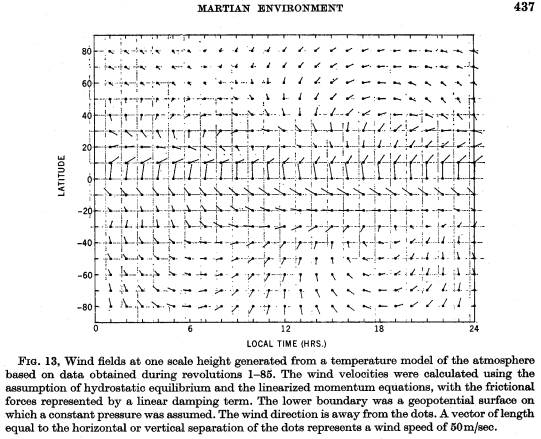
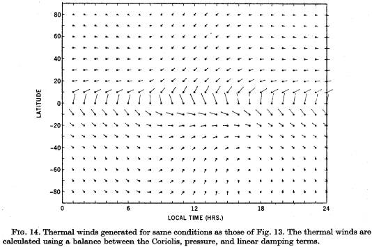

Investigation of the
Martian Environment by Infrared Spectroscopy on Mariner 9
R. HANEL, B. CONRATH, W. HOVIS, V. KUNDE, P. LOWMAN, W. MAGUIRE,
J. PEARL, J. PIRRAGLIA, C. PRABHAKARA, AND B. SCHLACHMAN
Goddard Space Flight
Center, Greenbelt, Maryland 20771
AND
G. LEVIN AND P. STRAAT
Biospherics, Inc.,
Rockville, Maryland 20853
AND
T. BURKE
Jet Propulsion Laboratory, Pasadena, California 91103
The infrared spectroscopy experiment on Mariner 9 provides extensive information on the Martian environment, including spatial, diurnal, and secular dependences of atmospheric and surface parameters. Measurements obtained during and after the planet-wide dust storm indicate that large diurnal variations in atmospheric temperature existed up to at least 30 km; winds inferred from the temperature fields show a strong tidal component and significant ageostrophic behavior. With the dissipation of the dust, the maximum in the atmospheric temperature field moved from approximately latitude –60º and late afternoon local time to near the subsolar point in latitude and time. Analysis of spectral features due to the atmospheric dust indicates a SiO2 content of 60 ± 10%, implying that substantial geochemical differentiation has occurred. Water vapor estimates indicate abundances of 10-20 precipitable micrometers, less than has been inferred by ground-based methods in similar phases of previous Martian seasons. Between November 1971 and April 1972 no gross latitudinal or temporal dependence in the water vapor distribution has been detected from the south polar region to the equator. Water vapor has not been detected over the north polar regions. Surface pressure mapping has been carried out from which topographic relief of nearly two pressure scale heights is inferred. Extensive regions have been found where the surface pressure exceeds the triple-point pressure of water.
INTRODUCTION
A measurement of the thermal emission spectrum yields much information on the environment and climate of a planet. In certain spectral intervals the remotely sensed radiance originates at the surface, in others the emission comes from atmospheric gases and aerosols. This property of the thermal emission permits retrieval of surface and atmospheric temperatures, surface and atmospheric compositions, and total amount of CO2 in an atmospheric column. Other parameters, such as surface pressure and topography, and the wind field may then be derived.
However, to extract this information the spectra must have adequate spectral resolution (<5 cm-1) to at least resolve details in the contours of gaseous absorption bands and must be recorded with adequate precision. Instrumentation for infrared emission spectroscopy on the Nimbus earth satellites successfully demonstrated the feasibility of this technique for meteorological and geophysical investigations.
Infrared emission spectroscopy on Mars has been applied from the ground (e.g., Sinton and Strong, 1960) and from spacecraft (Mariner 6 and 7, Horn et al., 1972). However, only the orbiter Mariner 9 could explore the thermal emission of Mars systematically. This was the scientific objective of the infrared interferometer (IRIS) experiment. The more specific goals have been detailed previously (Hanel et al., 1970a) and preliminary results have already appeared (Hanel et al., 1972a). The present paper is a further report on results of continuing data analysis and conclusions through May 1972.
INSTRUMENT AND
CALIBRATION
The Michelson interferometer on Mariner 9 records the spectrum between 200 and 2000 cm-1 (5 and 50 µm) with a nominal spectral resolution of 2.4 cm-1 (apodized) and spatial resolution of about 125 km at periapsis with vertical viewing. A noise-equivalent-radiance (NER) of 0.5 x 10-7 W cm-2 sr-1/cm-1 has been achieved.
The instrument is in many respects similar to interferometers flown in earth orbit on Nimbus 3 and 4 (Hanel et al., 1970b and 1971). However, the Mariner interferometer covers a wider spectral range and has a higher spectral resolution as well as a lower NER than the earlier Nimbus instruments. The Mariner interferometer has a single infrared detector (a thermistor bolometer) and a cesium iodide substrate for the beamsplitter coatings. The Michelson mirror moves with a constant velocity during the recording of an interferogram. Wave-number calibration is provided by referencing all infrared spectra to the 0.6929-µm line of a neon discharge tube. Other details of the design and performance of the Mariner interferometer are discussed elsewhere (Hanel et al., 1972b).
Calibration spectra are periodically recorded while observing either deep space or an on-board blackbody. Scaling of the raw Martian spectra to the calibration spectra permits a display of the Martian spectra in radiometric units. The calibration method of the Mariner interferometer is similar to that of the Nimbus instruments previously described (Hanel et al., 1972c). A final calibration must include second-order effects. Two such effects for which allowance was made in the calibration of the Nimbus 4 data are not present in the Mariner instrument. The absence of an asymmetry in the response of the Nimbus instrument between the earth and space ports was verified on Mariner by measurements just before Mars encounter. The other effect arose from small temperature oscillations of the Nimbus instrument due to periodic loss of thermal control. In the Mariner IRIS the thermostat has worked well within the design range, controlling the instrument temperature to within a fraction of a degree.
The only second-order effect incorporated so far in the Mariner 9 calibration procedure is necessary to account for the imperfect blackness of the warm calibration source, which is an aluminum plate with 30º V-shaped grooves painted with 3M401-C10 black velvet paint. While this paint is relatively black over most of the instrument spectral range, small glass beads contained in it give rise to emittance variations of a few percent at 1100 cm-1 and 480 cm-1 which are characteristic wavenumbers of SiO2. A correction factor was derived from laboratory reflectance measurements on a duplicate blackbody, from similar measurements on the same type of paint, kindly made available by James Aronson (private communication), and finally by comparisons of the warm and cold calibrations on the interferometer while in orbit around Mars. All three methods were in agreement and, consequently, the emissivity correction of the warm calibration source has been applied to all spectra shown in this paper.
The calibrated emission spectra are the prime product of the infrared spectroscopy experiment. After applying the final calibration the Mars spectra will be available to the scientific community through the National Space Science Data Center.
GENERAL
CHARACTERISTICS OF THE SPECTRA
Since the arrival of Mariner at Mars in November 1971 the interferometer has produced over 20000 spectra showing variation with Martian coordinates, local time, season and secular events such as the dust storm. The substantial differences between spectra from the north polar hood, the south polar region, and midlatitudes on Mars, and from the Sahara desert are evident from Fig. 1.
Throughout the range from 250 to 500 cm-1 numerous rotational lines of water vapor are evident [Figs. 1(b) and (c)]; the strongest lines (at 254, 278, 303, 324, and 328 cm-1) are used for the determination of atmospheric water vapor content. Within the range from 500 to 800 cm-1 the main spectral features are due to numerous bands of carbon dioxide. The theoretical carbon dioxide spectrum is not in quantitative agreement with the observed spectra at 579, 608, 710, 730, and 770 cm-1. Readjustment of the theoretical line parameters is expected to eliminate most of these discrepancies. Weak carbon dioxide bands are seen at 828, 865, 961, and 1064 cm-1 [Fig. 1(c)]. Comparison of theoretical and observed spectra also indicates that the isotopic ratios of 12C to 13C and 16O to 18O on Mars are close to their terrestrial values. The broad diffuse absorption feature, Fig. 1(c), centered at approximately 1100 cm-1 and a smaller feature near 480 cm-1 are associated with dust suspended in the atmosphere. Another weak feature at approximately 1350 cm-1 is also tentatively identified with the suspended dust.
The spectrum [Fig. 1(a)] of the north polar area (revolution 102) closely resembles that of a 145K blackbody except in the CO2 band between 600 and 700 cm-1. There the higher intensity indicates a warmer atmospheric layer above a lower boundary having approximately the condensation temperature of CO2. The south polar spectrum [Fig. 1(b), revolution 29] has already been discussed (Hanel et al., 1972a); the shape of the CO2 band indicates the presence of a strong temperature inversion. The Martian midilatitude spectrum [Fig. 1(c), revolution 92] is compared to a Sahara spectrum [Fig. 1(e)] recorded by the Nimbus 4 meteorological satellite. Measured over a similar spectral range and with nearly the same spectral and spatial resolution, these spectra provide the opportunity for a comparative analysis between Mars and Earth. Similarities in the CO2 band [Fig. 1(c) and (e)] indicate that temperatures decrease with altitude in both atmospheres except at high altitudes where the reversal of the Q branch (667 cm-1) in the Sahara spectrum is caused by a temperature inversion due to heating by ozone. Indication of such an inversion is lacking in the Martian spectrum. Further, the 1042-cm-1 O3 band, so prominent in the earth spectrum, is absent in the Martian spectrum. Water vapor lines appear only weakly in Mars although strongly evident on Earth. Shown in Fig. 1(d) is the spectral emissivity of quartz (pure SiO2, fractured solid sample). This feature may be recognized in the Sahara spectrum between 1080 and 1250 cm-1 The corresponding silicate dust features on Mars are somewhat different because of the effects of particle size, mineral composition, and suspension in the atmosphere, as will be discussed later.
ATMOSPHERIC WATER
VAPOR
Water vapor in the Martian atmosphere has been conclusively identified from rotational lines which are evident in the observed spectra, Fig. 1(b) and (c). Preliminary analyses of the spatial and temporal change in the water vapor have been made for several regions on Mars: the south polar area, midlatitude regions near the subsolar point, and over the north polar hood. South polar passes were analyzed from revolutions 30 (Ls = 297°) and 116 (Ls = 321°), where Ls is the planetocentric longitude of Mars (The American Ephemeric and Nautical Almanac, 1971, 1972). Subsolar passes were selected early in the mission on revolution 20 (Ls = 293°), where the atmosphere was nearly isothermal, on revolution 92 (Ls = 314°) during the transition period from a dusty to a clear atmosphere, and on revolution 174 (Ls = 336°) after the atmosphere had cleared substantially and the temperature lapse rate had increased to between 3 and 4K/km. Local times were restricted to 1200‑1400 hr when the surface temperature attains its maximum value, thus maximizing the thermal contrast between surface and atmosphere; this in turn enhances the H2O lines in the observed spectra. For each water vapor determination ten to fifteen spectra are averaged to improve the signal-to-noise ratio.
The total H2O content is determined from a quantitative comparison of observed and synthesized spectra. The synthetic radiances were calculated by a numerical integration of a solution of the radiative transfer equation. Temperatures obtained from the inversion of the 667-cm-1 CO2 band, as discussed below, and a constant H2O mixing ratio were used. The latter is assumed based on the evidence of strong vertical and horizontal mixing indicated by the existence of the dust storm and by the wind fields discussed below. Synthesized and observed spectra for the south polar area are compared in Fig. 2; the former are offset vertically for clarity. Synthesized spectra with 10-20 precipitable micrometers of water vapor give best agreement with the observations. Similar comparisons for the subsolar-point cases yield also abundances in the range of 10-20 precipitable micrometers. Over the north polar hood water vapor was not identified, presumably due to the low temperatures which would cause most of the water to condense. It should be emphasized that estimates of the water vapor content are extremely sensitive to the surface pressure, the temperature difference between the surface and the lower atmospheric layers, and to the temperature gradient in the lower portion of the atmosphere. With refinements in these parameters the estimated amount of water vapor is also subject to adjustment.
Water vapor results from both IRIS spectra and ground-based observations are summarized in Fig. 3. The upper portion of the figure presents data from subsolar point latitudes (-20 to -30°) and the lower portion from the south polar region. The values determined from IRIS are indicated by vertical bars. The cross- hatched areas represent the range of total H2O content determined from ground- based observations during the 1969 opposition by Barker et al. (1970). The horizontal dashed lines represent mean values from the ground-based observations made by Tull (1972) during the same time period of the IRIS measurements. All ground- based observations represent averages over the entire disk of Mars. In contrast to the above measurements, the results from the 1.38-µm water-vapor band experiment on Mars 3 (Moroz and Ksanformaliti, 1972) indicate substantially lower water vapor amounts.
From these results it may be concluded that the average abundance of atmospheric water vapor decreased slightly as the entrained dust settled but then increased after atmospheric clearing during the late southern summer, Ls = 350—360°. The latitudinal and seasonal changes of atmospheric water vapor on Mars are often correlated with changes in the polar caps (Barker et al., 1970; Schorn, 1971). However, in 1971 the water vapor content did not decrease towards the equator from the receding south polar cap as would be expected if it were the source of vapor. Latitudinal gradients were noted from the north polar cap during the 1969 opposition (Tull, 1970). Perhaps most significant, however, is the fact that the average abundance of water vapor for the entire planet is lower than in previous oppositions. This lower abundance could be due to an unusually large amount of water trapped in the north polar cap; some evidence of anomalous behavior during tile northern autumn is evident from the extension of the north polar hood to lower latitudes than in previous corresponding seasons.
Alternatively, however, the unusually low water vapor content may be associated with adsorption on dust particles. Experimental and theoretical investigations by Davis (1969), Pollack et al. (1970), and Fanale and Cannon (1971) have indicated that adsorption of water vapor by the Martian regolith may be a significant mechanism in governing vapor abundance. In general, gas is adsorbed at low temperatures and desorbed at higher temperatures. It is suggested that the suspended dust provided additional surface areas to permit more efficient adsorption and that much of the water then settled with the dust. With increasing temperatures at the surface some of the water vapor may return to the atmosphere.
As more and more refined water vapor analyses are available a more quantitative investigation of the relative importance of adsorption and of the polar cold trap in these processes will be made. It should also be noted that water vapor amounts of 10-20 precipitable micrometers, in conjunction with the inferred temperature profiles, allow condensation in the upper atmosphere.
ATMOSPHERIC DUST
COMPOSITION
South-polar and midlatitude spectra recorded during the first 100 orbits show strong features whose positions and relative strengths are characteristic of silicate minerals. The broad features near 480 cm-1 and between 900 and 1200 cm-1 which appear in emission in the south-polar spectra, and in absorption over the low latitudes where the surface is warmer than the atmosphere, indicate the presence of particles suspended in the atmosphere. It has been pointed out that the mineralogical characteristics, primarily the SiO2 content, determine the spectral position of the absorption and transmission maxima, (Lyon, 1964; Hovis and Callahan, 1966; Aronson et al., 1967; Conel, 1969; Salisbury, 1970). From such data it may be possible to infer the dust composition. However, the matter is complicated by effects of particle size and the possibility that more than one mineral group may be contributing to the recorded spectrum.
The wavenumber of maximum absorption in the interval between 900 and 1250 cm-1 may be obtained in several ways. One is to determine the minimum in the brightness temperature of the midlatitude spectra and the corresponding maximum in the south polar spectra; samples of both are shown in Fig. 4. The brightness temperature is better suited for such a determination than the intensity because the nonlinear effect of the Planck function has been removed. A value between 1070 and 1100 cm-1 may be deduced from the spectra.
A second method, based on the standard deviation of a set of spectra, yields a more precise value. While the shallow minimum of the brightness spectrum could conceivably be affected by unrecognized instrumental effects, the standard deviation depends much less on the absolute calibration. Shown in Fig. 5 is the same midlatitude average spectrum (Rev. 92) displayed in Fig. 4(a), together with the standard deviation σ(T). The ensemble of spectra was chosen between 1200 and 1400 hr local Mars time. Over this period, the surface temperature is near its diurnal maximum and is expected to change very little between individual samples. The lower atmosphere, however, is still warming as indicated by the maxima in standard deviation near 600 and 730 cm-1. At these wavenumbers atmospheric emission originates primarily between the 3-mbar level and the surface. A low standard deviation in the center of the 667-cm-1 CO2 band indicates stable temperatures at higher levels. The strong maximum at 1090 cm-1 is caused in part by temperature fluctuations in the lower atmosphere but also by the local variability of the dust among spectra in the ensemble. In either case the maximum variation is expected to occur at the most absorbing wavenumber. This occurs at 1090 cm-1, in agreement with the results obtained from the brightness temperatures.
It has been pointed out by Conel (1969) that the transmission maximum (Christiansen frequency) is also a good indicator of bulk chemical composition. For silicates, the Christiansen frequency shifts from 1360 cm-1 for quartz towards lower wavenumbers with the inclusion of other elements into the lattice structure. From the maximum of the brightness temperature in the midlatitude spectrum and from the minimum in the standard deviation (Fig. 5) a Christiansen frequency between 1280 and 1300 cm-1 is inferred. Again, both methods are consistent.
Although the spectral positions of the absorption maximum and minimum of the Martian dust cloud seem to be well defined, the interpretation in terms of the silica content is still difficult. The difficulties arise in part from the complexity of theoretical treatments of a cloud of scattering and absorbing particles of nonspherical shape and in part from the lack of knowledge of the complex refractive index of most minerals in the infrared. Although some effort towards a better theoretical understanding have been made by Aronson et al. (1967) and Conel (1969) the interpretation of the IRIS spectra in terms of the SiO2 content must still be based on an empirical comparison with laboratory transmission spectra of mineral dust.
One extensive set of transmission measurements of mineral dust has been prepared by Lyon (1964) who imbedded mineral powders in KBr pellets. With such preparation only the absorption maxima are reliable, since the minima representing the Christiansen frequency are shifted considerably by the differences in refractive index between air or CO2 (~1) and KBr (~1.5). Comparison of the peak absorption of the Martian dust as measured by IRIS (~1085 cm-1) with the transmission spectra of Lyon indicates a reasonable agreement with dacite (68.7% SiO2, USNM 82, Lassen Peak, CA) as well as with quartz basalt (57.25% SiO2, USNM, Snag Lake Cinder Cone, Lassen Co., CA) but poor agreement with more basic materials.
Comparison of the Christiansen frequency measured by IRIS (~1290 cm-1) with Conel’s laboratory data (Conel, 1969, Fig. 5) shows good agreement with the alkali-feldspar group (SiO2 ~65%) as well as with andesine (SiO2, ~57%) and oligoclase (SiO2 ~62%) of the plagioclase group, but no agreement with pure SiO2, with micas or other minerals of lower SiO2 content. Comparison of the IRIS-determined Christiansen frequency with a diagram kindly made available by J. Salisbury (private communication) indicates also a SiO2 content by weight of approximately 60%.
From these comparisons the SiO2 content of the Martian dust may be estimated as 60 ± 10%.
GEOCHEMICAL
IMPLICATION
Before drawing any geochemical conclusions from the chemical composition of the Martian aerosol, it is important to determine if the dust, either suspended or on the surface, is chemically representative of the Martian surface rocks, and specifically if the dust could be higher in SiO2 than the rocks from which it was derived.
A possible parallel to the Martian situation may be provided by terrestrial wind-deposited sediments (loess), found in large areas of North America, Europe, and Asia. Pettijohn (1957, p. 378) lists chemical analyses of 5 loess samples from the United States, China, and Belgium, with the following weight percentages of SiO2: 59.3, 61.0, 64.6, 72.8, and 74.5. These values are somewhat more siliceous than the average continental crust, which is about 60% SiO2 according to studies by Ronov and Yaroshevsky (1969). However, it is apparent that no gross chemical fractionation occurred in these sediments.
A second aspect of the question involves possible chemical fractionation by grain size of wind-deposited sediments. As Pettijohn (1957, p. 101) shows, chemical composition of terrestrial sediments (including water-deposited ones) is strongly dependent on grain size. Fine-grained sediments tend to be richer in clay minerals (chiefly kaolinite, about 46% SiO2), and coarse-grained ones richer in quartz (pure SiO2); thus fine-grained sediments are generally less siliceous than coarser-grained ones. Terrestrial loess has grain sizes largely between 30 and 60 µm (Pettijohn, 1957, p. 378), compared with the average grain size of less than 5 µm for clay (Krumbein and Sloss, 1951, p. 71), a major constituent of terrestrial sediments as a group. Evidence by IRIS and other experiments (Moroz and Ksanfomaliti, 1972) indicates that the dust particle size is a few micrometers. It is therefore expected that the dust is probably somewhat less siliceous than the rocks from which it is derived.
From the above evidence, it appears that the present estimate of 60 ± 10% SiO2 for the Martian dust composition is probably fairly representative of the mean composition of the Martian crust. This being so, it supports the conclusion that geochemical differentiation of Mars has occurred (Hanel et al., 1972a). Comparison of various differentiated and undifferentiated bodies is shown in Table I. The conclusion that Mars is differentiated is further supported by the existence of volcanoes and lava fields discovered by the television experiment on Mariner 9 (McCauley et al., 1972). Many of the lava flows, such as those in the Nix Olympica-Tharsis region, appear similar in morphology and scale to basaltic lava flows as seen on terrestrial orbital photographs (Lowman and Tiedemann, 1971).
SURFACE PRESSURE
The atmospheric pressure at the Martian surface, and from this the topography of the planet, is determined by evaluating the opacity of the atmosphere in the wing of the 667-cm-1 band of CO2.
The upwelling radiance Iv, observed at frequency v is given by
where εv is the emissivity of the surface, Bv(Ts) is the Planck function for radiance emitted by the surface at temperature Ts, τvs is the transmittance of the atmosphere from the surface to the spacecraft, and the integral is the contribution of the atmosphere. By rewriting the integral in terms of an average over transmittance <Bv>, (1) may be rewritten as
This expression is used iteratively to evaluate τvs. Iv is the directly measured radiance, Ts is evaluated from intensities in the window region (1300 cm-1) of the infrared spectrum, and εv is evaluated just outside of the 667-cm-1 band and is assumed to remain constant within the edge of the band. It is assumed that the atmospheric thermal structure does not change significantly between adjacent IRIS measurements, so that the temperature profile from a given measurement may be used in estimating τvs for the following measurement. The surface pressure is obtained from τvs by assuming a CO2 mixing ratio of unity and employing a transmittance model based on direct line-by-line integration techniques.
Topography of the Tharsis area in 1-km increments is shown in Fig. 6. Altitudes are referred to a 6.1-mbar pressure surface, and are evaluated from the surface pressure using a 10-km scale height. The contours are alternately dotted and solid for clarity. The IRIS instrument did not view North Spot (latitude 11°, longitude 104°), so it is now shown; the instrument viewed only the slope of Middle spot (latitude 0º, longitude 113°), so its height could not be determined; a complete spectrum was obtained in the caldera of South Spot (-9°, 120°), from which the altitude of the summit crater is found to be 14 km. Considering the 8-km contour as the base of the cone, the average slope of the structure is approximately 3°. This low slope suggests that the crater was formed by very fluid lavas, which is consistent with the interpretation of these features as shield volcanoes (McCauley et al., 1972). A further feature of interest is the valley which proceeds eastward from (-8°, 98°), which corresponds to the beginning of the great equatorial rift canyon (McCauley et al., 1972).
Previous spacecraft measurements have shown that Hellas is a substantial depressed area (Herr et al., 1970; Barth and Hord, 1971). Figure 7 shows the topography of Hellas basin as obtained from IRIS data. Considering the feature to be defined by the 0-km contour, it is found to be roughly 1800 km in its north-south dimension, and 2200 km in its east-west dimension. The eastern slope is noticeably less steep than that on the west. Comparison of these contours with the TV pictures of the basin shows that the transition from rugged terrain to the relatively featureless terrain deep within Hellas occurs at about the -1-km (6.7 mbar) level.
Areas in which the surface pressure exceeds 6.1 mbar are of biological interest, for under temperature conditions which frequently occur on Mars, liquid water can exist in equilibrium with its vapor. Further preliminary topographic mapping between -65° and +20° discloses that the surface pressure during southern summer (320° < Ls < 350°) exceeds 6.1 mbar in fairly large areas of Argyre, western Margaritifer Sinus and Isidis Regio, in addition to Hellas.
Preliminary comparison of IRIS topography with 2-µm CO2 (Herr et al., 1970; Moroz and Ksanfomaliti, 1972) and ultraviolet results (Barth and Hord, 1971) generally show good agreement for altitudes above approximately 0 km. However, results of the above experiments are systematically higher than IRIS results at lower altitudes, for example, in Hellas. Possible causes of the discrepancies, e.g., the presence of residual fine dust in the atmosphere, are being investigated.
Comparison of IRIS topographic altitudes with occultation (Kliore et al., 1972) and with radar (Downs et al., 1971; Pettengill et al., 1971) results shows the following. Below the 4-km level, IRIS topographic data lie systematically 1 km below occultation results. At increasingly high altitudes, however, IRIS data fall progressively lower than occultation data, the differences reaching 3 km at an occultation altitude of 9 km. A similar trend is observed in comparison with radar data, in addition to an overall offset of about +3 km at the radar zero of altitude. Aside from these systematic differences, the scatter in the IRIS data relative to either occultation or to radar measurements is about ±1 km. At present, the CO2 transmittance functions and irregularities in the Martian gravitational potential field (Lorell et al., 1972) are being investigated as possible sources of the systematic differences. Further possibly significant sources of error are pressure variations due to cyclonic activity, to diurnal tidal effects, and particularly for the extended mission, to seasonal effects associated with polar cap changes (Leighton and Murray, 1966).
ATMOSPHERIC AND
SURFACE TEMPERATURE
Another objective of the IRIS experiment is to derive information on the thermal structure of the Martian atmosphere, using the 667-cm-1 CO2 absorption bands. Data from the strongly absorbing band center provide information on the temperature of the upper atmosphere while data from the less strongly absorbing portions of the bands provide information on the middle and lower atmosphere. A knowledge of the spectral transmittance of the atmosphere above each atmospheric level is required. Transmittance models based on direct line-by-line integration techniques have been employed for this purpose. In the studies carried out thus far, the Martian atmosphere has been assumed to be entirely CO2. The techniques employed for inverting the integral equation of radiative transfer (1) to obtain T(p) are similar to those developed for remote sounding of the terrestrial atmosphere (see Conrath and Revah, 1972, for a review).
Preliminary estimates of temperature profiles have been made for almost all usable spectra thus far obtained. It is anticipated that future estimates will incorporate some revisions in the atmospheric transmittance models, improvements in the calibration of the spectra, and possibly some modifications in the computational techniques. Therefore, the results presented here should still be regarded as preliminary. However, it is felt that the gross properties of the inferred atmospheric temperature field will not be modified by subsequent improvements in the analyses.
Examples of three individual temperature profiles are shown in Fig. 8. All three profiles were acquired at approximately the same latitude (-30°) and local time (1400 hr). The profile from revolution 20 is typical of those obtained in the early part of the mission when the atmosphere was heavily dust laden. The lower part of the profile is regarded as uncertain since possible additional opacity in the 667-cm-1 band due to dust was not included in the analysis. As would be expected, profiles obtained during this period do not agree well with theoretical predictions based on dust-free atmosphere (Gierasch and Goody, 1968; Prabhakara and Hogan, 1965; Ohring and Mariano, 1965). However, reasonable agreement is obtained with recent calculations of Gierasch and Goody (1972) which include grey atmospheric absorption of solar energy. As the dust began to dissipate, the apparent lapse rate in the lower atmosphere increased while the upper atmosphere cooled as indicated by the example from revolution 92. By revolution 174, further cooling had occurred at all levels. However, in all cases the lapse rate remained subadiabatic.
Initial analyses of the temperature field have focused on obtaining the mean behavior and its change as the dust dissipated. Data from selected groups of orbits were sorted into sets spanning 10 degrees in latitude and one hour in Martian local time. The average was taken for each of these sets and used to construct isotherms in a latitude-local time plane. In this way, the mean diurnal behavior of the temperature field could be estimated for various atmospheric levels.
Examples from three different groups of orbits are shown in Figs. 9, 10, and 11. In each case only two atmospheric levels are shown, the 0.3-mbar level (~30 km) and the 2-mbar level (~10 km). While large gaps in the data exist, the gross behavior of the temperature field is apparent. The data shown in Fig. 9 were obtained between orbits 1 and 85 when a large amount of dust was present in the atmosphere. Temperature maxima are seen at both levels near latitude -60° late in the afternoon. Between orbits 85 and 120 (Fig. 10) atmospheric clearing was evident, and the temperature maxima decreased in magnitude and shifted toward the equator and earlier local times. By orbits 161-186 (Fig. 11) further cooling had occurred and the maximum at the 2-mbar level had shifted to approximately the latitude of the subsolar point (-7°). The observed diurnal variations of 15-30 K are substantially larger than theoretical predictions under both dusty and clear conditions (Gierasch and Goody, 1972).
A similar analysis of the diurnal behavior of the brightness temperatures at 1300 cm-1 was carried out. At this wavenumber the mineral dust seems to be most transparent (Christiansen frequency) and therefor the measured brightness temperature is the best estimate of the temperature of the surface. As shown in Fig. 12, the surface temperatures are found to behave quite differently from the atmospheric temperatures. The maximum occurred near the latitude of the subsolar point at about 1300 hr local time both during the period the atmosphere was dust filled and after the clearing was essentially complete.
WIND FIELDS
Preliminary estimates of wind fields consistent with the observed mean atmospheric temperature fields have been made. For use in fluid dynamic equations, analytic models of the longitudinally averaged temperature fields were constructed from measured atmospheric temperatures obtained on orbits 1-85 and 161-186. The model temperatures consist of an axially symmetric component and a sinusoidally varying diurnal component. The lapse rate and the location of temperature maxima in altitude, latitude and local time have been incorporated into the models so that the gross temperature gradients, as determined from the spectra, have been retained. The temperatures have been extrapolated into the regions of local time and latitude where data are missing.
The approximate hydrodynamic equations used to describe atmospheric motion in terms of latitude f, longitude l, and pressure p, are (see e.g., Haltiner, 1971)
The hydrostatic approximation has been assumed, and the vertical component of the Coriolis acceleration has been neglected. V is the horizontal velocity, Ñ is the two-dimensional gradient operator on a constant pressure surface, k is a unit vector in the direction of the local vertical, and f = 2Ω sin f is the Coriolis parameter for a planetary rotational angular velocity Ω. FH is the horizontal frictional force, Φ is the geopotential function, and in the coordinate system employed, the parameter ω = dp/dt replaces the vertical velocity.
The geopotential function can be obtained from (5) in the form
where Φs is the geopotential at the planetary surface. In general, Φs and ps will vary with latitude and longitude because of changes in topography, and ps will also change due to atmospheric motions. Because of the large elevation differences found on Mars, the effects of topography on the wind field may be considerable (Gierasch and Sagan, 1971; Sagan et al., 1971; Blumsack, 1971). In addition, the large observed diurnal variations in the atmospheric temperatures can result in significant tidal variations in ps. However, in this preliminary study Φs and ps are assumed to be independent of latitude and longitude. When the mean temperature field is then employed in (6), a geopotential function is obtained which is dependent only on latitude, pressure, and local time. Further approximations include neglect of the nonlinear transport terms in (3) and the assumption that FH = -τ-1V. The damping time τ was chosen as 4 days, corresponding approximately to an eddy transport coefficient of 2 x 107 cm2/sec. With these assumptions, the greatly simplified momentum equation is
Numerical integration of (7) was carried out over times long compared to τ, resulting in a steady-state solution independent of the arbitrary initial conditions employed. The wind field at one pressure scale height resulting from the temperature model based on the mean temperatures from orbits 1-85 is shown in Fig. 13. Winds obtained in the equatorial region are highly uncertain due to the vanishing of the Coriolis terms and dominance of the damping terms. The most significant feature of the wind field is the strong diurnal tidal component. It is of interest to compare this wind field with that obtained from (7) with ∂V/∂t set equal to zero.

The resulting equation is the thermal wind equation with an additional damping term which is highly significant only near the equator. The thermal wind field calculated using this equation is shown in Fig. 14. Comparison of the two wind fields indicates that the thermal winds are a rather poor approximation, and there is considerable cross-isobaric flow due to the tidal nature of the wind regime.

Wind fields were also calculated from (7) using the mean temperature field from orbits 161-168. A strong tidal component was again obtained. The stronger meridionial temperature gradients resulted in somewhat larger wind velocities in this case.
The highly simplified dynamical model considered here can be expected to give only the gross behavior of the mean wind field. More sophisticated models which include the frictional interaction of the atmosphere and surface, nonlinear transport terms, tidal variations in surface pressure, and topography are currently being developed.
BIOLOGICAL
IMPLICATIONS
Mariner 9 has produced data suggesting that the prospects for life on Mars, deemed negligible since Mariner 4, are significantly increased. IRIS has shown that differentiation has occurred on Mars. Dynamic events such as dust storms, high winds, hazes or clouds, and polar cap transformations have also been recorded. Mariner 9 television data (McCauley et al., 1972) have indicated that faulting, volcanism, wind and water erosion have been active forces on the planet. Many of these processes are conducive to the evolution of life. For example, differentiation of the planet makes lighter elements more readily available for evolutionary processes at the surface. Dynamic processes ensure the exposure and mixing of possible life precursors and nutrients. Further, they create a diversity of habitats essential for divergent evolutionary processes.
Trace atmospheric constituents, which might possibly imply surface metabolic processes in accordance with the theory of Hitchcock and Lovelock (1967) and Dayhoff et al. (1967), have so far not been identified in IRIS spectra. However, the observed atmospheric composition, atmospheric pressure, temperature, and surface conditions do not preclude the existence of an independent life on Mars. The general lack of significant amounts of water has been considered the major life-limiting factor (Mariner-Mars 1969: A Preliminary Report, 1969). Since liquid water may currently be lacking on the planet surface and only traces of water vapor exist in the atmosphere, Martian life would have had to adapt to extreme aridity or have become restricted to limited areas where liquid water may be available at least transitorily. Topographic results discussed above indicate that liquid water could exist in extensive areas on the surface of Mars if adequate sources of juvenile water were present; such areas then represent the most likely places to explore the possible existence of life.
It is generally agreed (Morowitz, 1968) that, if life has evolved on Mars, both phototrophic and heterotrophic organisms are required to harness the sun’s energy and to maintain nutrient cycles. Assuming the existence of microbial life, the dynamic surface forces indicated by Mariner 9 suggest that heterotrophic microbial forms (and chemoautotrophs) would be widely distributed. Microbial phototrophs, on the other hand, may have been selected against and, if extant, would probably be restricted to microhabitats where they are protected from the shifting dust which would otherwise exclude the sun’s energy.
Observed Martian conditions do not preclude the survival of some known earth life forms although their growth under these conditions is speculative. Many organisms, in fact, are known to survive conditions similar to those on Mars with respect to temperature, water content, and pressure. Further, terrestrial microbes can readily be cited which grow in saline water, acidic and alkaline solutions, at freezing temperatures, or anaerobically under carbon dioxide. These considerations, coupled with the dynamic mechanisms available on the planet for spreading contaminants, emphasize the necessity for sterilization of Mars landers.
SUMMARY
Preliminary analysis of Mariner 9 IRIS data through May 1972 has thus far revealed spectral features due to CO2, water vapor, and silicate dust suspended in the atmosphere. A number of significant results have been obtained and conclusions have been reached.
Water vapor abundances of 10-20 precipitable micrometers were found both during the dust storm and as the dust dissipated, in general agreement with ground-based measurements obtained during the same period. However, ground-based measurements obtained in previous years during similar Martian seasonal conditions have indicated larger amounts of water vapor. No significant latitudinal variation in water vapor was observed from the south pole to the equator.
A study of spectral features due to the dust indicates a SiO2 content of 60% ± 10%. Arguments have been given which indicate the surface material should be as least as acidic as the atmospheric dust. These results support the conclusion that geochemical differentiation has occurred on Mars.
Surface pressure have been estimated using measurements in the wing of the 667-cm-1 CO2 band. Preliminary results demonstrate the usefulness of this technique for obtaining surface topography over large portions of the planet. Topographic variations of the order of 2 pressure scale heights have been found, and large regions exist for which the pressure lies above the triple-point pressure for water.
Atmospheric temperatures, also derived from the 667-cm-1 CO2 bands, always showed subadiabic lapse rates as well as unexpectedly large diurnal variations of 15-30 K. The maximum temperatures occurred late in the afternoon near latitude -60° during the dust storm, but moved toward the subsolar latitude and shortly after local noon as the dust cleared. Unlike the atmospheric temperatures, the surface temperatures displayed a maximum shortly after local noon and near the subsolar point at all times.
Winds derived from the temperature fields were found to possess strong diurnal tidal components. Comparison of thermal winds with winds obtained from the linearized hydrodynamic equations indicates the existence of significant cross-isobaric flow.
At present, no results indicative of biological activity have been obtained. However, conditions for life on Mars have been found to be less harsh than previously thought. These findings validate the continuing efforts in the search for life on Mars. Further, the possibility that terrestrial microorganisms may survive, if not actually grow, on Mars, emphasizes the importance of sterilization of future landers.
ACKNOWLEDGMENTS
The authors are grateful to H. Sagges and L. Purves of Goddard Space Flight Center for extensive programming support and to Drs. R. Curran, R. Samuelson, and L. Walter of Goddard Space Flight Center for their contributions.
REFERENCES
Apollo 15 Preliminary Science Report (1972). NASA Manned Spacecraft Center. Houston, NASA SP-289.
ARONSON, J. R.. EMSLIE, A. G., ALLEN, R. V., AND McLINDEN, H. G. (1967). Studies of the middle- and far-infrared spectra of mineral surfaces for applications of remote compositional mapping of the moon and planets. J. Geophys. Res. 72, 687-703.
BARKER, E. S., SCHORN, R. A., WOSZCZYK, A., TULL, R. G., AND LITTLE, S. J. (1970). Mars: Detection of atmospheric water vapor during the southern hemisphere spring and summer season. Science 170, 1308-1310.
BARTH, C. A., AND HORD, C. W. (1971). Mariner ultraviolet spectrometer: topography and polar cap. Science 173, 197-201.
BLUMSACK, S. L. (1971). On the effects of topography on planetary atmospheric circulation. J. Atmos. Sci. 28, 1134-1143.
CONEL, J. E. (1969). Infrared emissivities of silicates: Experimental results and a cloudy atmosphere model of spectral emission from condensed particulate mediums. J. Geophys Res. 74, 1614-1634.
C0NRATH, B. J., AND REVAH, I. (1972). A review of nonstatistical techniques for the estimation of vertical atmospheric structure from remote infrared measurements. In “Proceedings of a Workshop on the Mathematics of Profile Inversion” (L. Colin, Ed.), NASA TMX-62150.
DAVIS. B. W. (1969). Some speculations on adsorption and desorption of CO2 in Martian bright areas. Icarus 11, 155-158.
DAYHOFF. M. O., LIPPINCOTT, E. R., ECK, R., AND SAGAN, C. (1967). Thermodynamic equilibria in planetary atmospheres. Astrophys. J. 147, 753.
DOWNS, G. S., GOLDSTEIN, R. M., GREEN, R. R., AND MORRIS, G. A. (1971). Mars radar observations, a preliminary report. Science 174, 1324-1327.
FANALE. F. P., AND CANNON, W. A. (1971). Adsorption on the Martian regolith. Nature 230, 502-504.
GIERASCH, P., AND GOODY, R. (1968). A study of the thermal and dynamical structure of the Martian lower atmosphere. Planet. Space Sci. 16, 615-646.
GIERASCH, P., AND GOODY, R. (1972). The effect of dust on the temperature of the Martian atmosphere. J. Atmos. Sci. 29, 400-402.
GIERASCH, P., AND SAGAN, C. (1971). A preliminary assessment of Martian wind regimes. Icarus 14, 312-318.
HALTINER, G. J. (1971). “Numerical Weather Prediction”, p. 8. John Wiley & Sons, New York.
HANEL, R. A., CONRATH, B. J., HOVIS, W. A., KUNDE, V., LOWMAN, P. D., PRABHAKARA, C., AND SCHLACHMAN, B. (1970a). The infrared spectroscopy experiment for Mariner Mars 1971. Icarus 12, 48-62.
HANEL, R. A., SCHLACHMAN, B., CLARK, F. D., PROKESH, C. H.. TAYLOR, J. B., WILSON, W. M., AND CHANEY, L. (1970b). The Nimbus 3 Michelson interferometer. Appl. Opt. 9, 1767-1774.
HANEL, R. A., SCHLACHMAN, B., ROGERS, D., AND VANOUS, D. (1971). Nimbus 4 Michelson interferometer. Appl. Opt. 10, 1376-1382.
HANEL, R. A., CONRATH, B. J., HOVIS, W. A., KUNDE, V. G., LOWMAN, P. D., PEARL, J. C., PRABHAKARA, C., AND SCHLACHMAN, B. (1972a). Infrared spectroscopy experiment on the Mariner 9 mission: Preliminary results. Science 175, 305-308.
HANEL, R. A., SCHLACHMAN, B., BREIHAN, E., BYWATERS, R., CHAPMAN, F., RHODES, M., RODGERS, D., AND VANOUS, D. (1972b). The Mariner 9 Michelson interferometer. Appl. Opt., in press.
HANEL, R. A., CONRATH. B. J., KUNDE, V. G., PRABHAKARA, C., REVAH, I., SALOMONSON, V. V., AND WOLFORD, G. (1972c). The Nimbus 4 infrared spectroscopy experiment, IRIS D: Part I, calibrated thermal emission spectra. J. Geophys. Res. 77, 2629-2641.
HERR, K. C., HORN, D., MCAFEE, J. M., AND PIMENTEL, G. C. (1970). Martian topography from the Mariner 6 and 7 infrared spectra. Astron. J. 75, 883-894.
HITCHCOCK, D. R., AND LOVELOCK, J. E. (1967). Life detection by atmospheric analysis. Icarus 7, 149-159. See also LOVELOCK, J. E., AND HITCHCOCK, D. R. (1967). Detecting planetary life from Earth. Science J. 3, 56-58.
HORN, D., MCAFEE. J. M., WINER, A. M., HERR, K. C., AND PIMENTEL, G. C. (1972). The composition of the Martian atmosphere; minor constituents. Icarus 16, 443-456.
HOVIS, W. A., AND CALLAHAN, W. R. (1966). Infrared reflectance of igneous rocks, tuffs, and red sandstone from 0.5 to 22 microns. J. Opt. Soc. Am. 56, 639-643.
KLIORE, A. J., CAIN, D. L., FJELDBO, G., SEIDEL, B. L., AND SYKES, M. J. (1972). The atmosphere of Mars from Mariner 9 radio occultation measurements. Icarus 17, in press.
KRUMBEIN, W. S., AND SLOSS, L. L. (1951). “Stratigraphy and Sedimentation,” p. 71. W. H. Freeman Co.. San Francisco, CA.
LEIGHTON, R. B., AND MURRAY, B. C. (1966). Behavior of carbon dioxide and other volatiles on Mars. Science 153, 136-144.
LORELL, J., BORN, G. H., CHRISTENSEN, E. J., JORDAN, J. F., LAING, P. A., MARTIN, W. L., SJOGREN, W. L., SHAPIRO, I. I., REASENBERG, R. D., AND SLATER, G. L. (1972). Mariner 9 celestial mechanics experiment: gravity field and pole direction of Mars. Science 175, 318-321.
LOWMAN, P. D., JR., AND TIEDEMANN, H. A. (1971). Terrain photography from Gemeni spacecraft: Final geologic report. X-644-71-15, Goddard Space Flight Center.
LOWMAN, P. D., JR. (1972). The geologic evolution of the Moon. J. Geology 80, 125-166.
LYON, R. J. P. (1964). Evaluation of infrared spectrophotometry for compositional analysis of Lunar and planetary soils. Part II: Rough and powdered surfaces. NASA Contractor Report CR-100.
Mariner-Mars 1969: A Preliminary Report (1969). National Aeronautics and Space Administration, Washington, D.C. NASA SP-225, p. 12.
McCAULEY, J. F., CARR, M. H., CUTTS, J. A., HARTMANN, W. K., MASURSKY, H., MILTON, D. J., SHARP, R. P., AND WILHELMS, D. E. Preliminary report on the geology of Mars. Icarus 17, 289-327.
MOROWITZ, H. J. (1968). “Energy Flow in Biology,” p. 55. Academic Press, New York.
MOROZ, V. I., AND KSANFOMALITI (1972). Preliminary results of the astrophysical observations of Mars from AIS Mars-3. Preprint of paper presented at URSI/IAU/COSPAR Symposium on Planetary Atmospheres and Surfaces, Madrid. Spain, 10-13 May 1972.
OHRING, G., AND MARIANO, J. (1965). The vertical temperature distribution in the Martian atmosphere. J. Atmos. Sci. 23, 251-255.
PETTENGILL, G. H., ROGERS, A. E. E., AND SHAPIRO, I. I. (1971). Martian craters and a scarp as seen by radar. Science 174, 1321-1324.
PETTIJOHN, F. J. (1957). “Sedimentary Rocks,” Harper & Brothers, New York.
POLLACK, J. B., PITMAN, D. KHARE, B. N., AND SAGAN, C. (1970). Goethite on Mars: A laboratory study of physically and chemically bound water in ferric oxides. Smithsonian Astrophysical Observatory Special Report 314, May 15, 1970.
PRABHAKARA, C., AND HOGAN, J. S. (1965). Ozone and carbon dioxide heating in the Martian atmosphere. J. Atmos. Sci. 22, 97-109.
RONOV, A. B., AND YAROSHEVSKV, A. A. (1969). Chemical composition of the Earth’s crust. In “The Earth’s Crust and Upper Mantle” (P. V. Hart, Ed.). Geophysical Monograph 13, Amer. Geophys. Union. Washington.
SAGAN, C., VEVERKA, J.. AND GIERASCH, P. (1971). Observational consequences of Martian wind regimes. Icarus 15, 253-278
SALISBURY, J. W., VINCENT, R. K., LOGAN, L. M., AND HUNT, G. R. (1970). Infrared emissivity of lunar surface features 2. Interpretation. J. Geophys. Res. 75, 2671-2682.
SCHORN, R. A. (1971). The spectroscopic search for Water on Mars: A history. In IAU Symposium No. 40, ‘Planetary Atmospheres” (C. Sagan, T. C. Owen and H. J. Smith. Eds.), pp. 223-236. Springer-Verlag. New York.
SINTON, W. M., AND STRONG. J. (1960). Radiometric observations of Mars. Astrophys. J. 131, 459-469.
TULL, R. G. (1970). High dispersion spectroscopic observations of Mars IV. The latitude distribution of atmospheric water vapor. Icarus 13, 43-57.
TULL, R. G., AND BARKER, E. S. (1972). Ground-based photoelectric measures of H2O on Mars during the Mariner 9 encounter. Preprint of paper presented at 2nd Annual Meeting of Division of Planetary Sciences, American Astronomical Society, Kona, Hawaii, March 1972.
WOOD, J. A. (1968). “Meteorites and the Origin of Planets,” McGraw-Hill Book Co.. New York.
WYLLIE, P. V. (1971). “The Dynamic Earth: Textbook in Geosciences,” John Wiley & Sons, New York.
DISCUSSION
CHARLES TOWNES: How certain is your identification of SiO2? Is that the only compound present or could there be others as well?
HANEL: The identification of SiO2 was based on a number of bands so that the identification is positive. However, it is not necessarily pure SiO2.
SEYMOUR HESS: What were the magnitudes of the winds which you calculated from your temperature distribution?
HANEL: At one scale height we got between 20 and 30 meters per second. However, this result is only preliminary, being based upon a linearization of the Navier-Strokes equations and without considering topography.
MAROV: Did you find any difference in the humidity before and after the dust storm?
HANEL: At the beginning of the storm we found less water vapor, but this may have been due to obscuration by the dust.
SAGAN: Wind speeds of 20-30 m/sec are about what others have obtained from model calculations before introducing topography. Did your value of 140K for the polar cap temperature apply to both early and late orbits?
HANEL: Yes, to both.
SAGAN: Was your 2-component polar-region model solution unique?
HANEL: Yes.
TOWNES: How do the relative amounts, 65 and 35%, which you found for the cold and warm components compare with other estimates of the fraction of the surface covered by frost?
HANEL: The television shows the same fraction, that is, about two-thirds.
MAROV: In your solution of the Navier-Stokes equations to obtain wind velocities, what boundary conditions did you use?
HANEL: We used a temperature distribution according to our measurements, and a surface which had no topography and had constant pressure.
HESS: The effect of topography on the winds is primarily thermal. That is, the surface controls the temperature at the boundary. Your solution may already reflect the topographic effect because you actually measured the temperature distribution.
SAGAN: Winds of only 20-30 m/sec won’t lift dust, so something else is happening which increases the wind velocity.
ANDREW YOUNG: Dr. Hanel’s solution is referred to a constant-pressure surface, but the real surface has variable pressure. This is the difference between his solution and one which explicitly includes topography.